Das Entfernen von Linux aus einem Dual-Boot-Setup stellt den Windows Boot Manager nicht automatisch wieder her.
Jeder Schritt enthält klare Anweisungen und Screenshots, damit Sie den Vorgang auch ohne Expertenkenntnisse sicher durchführen können.
Den für Ubuntu reservierten Speicherplatz entfernen
Öffnen Sie die Datenträgerverwaltung und löschen Sie die Linux-Partition. Drücken Sie Windows + X und wählen Sie Datenträgerverwaltung, oder suchen Sie danach im Startmenü.
Die Linux-Partition hat keinen Laufwerksbuchstaben und wird meist als RAW oder mit einem unbekannten Dateisystem angezeigt. Sie kann auch als kleine Partition mit der Bezeichnung „Linux“ erscheinen oder gar keine Bezeichnung haben.
- Rechtsklicken Sie auf die Linux-Partition.
- Wählen Sie Volume löschen.
- Bestätigen Sie den Vorgang.
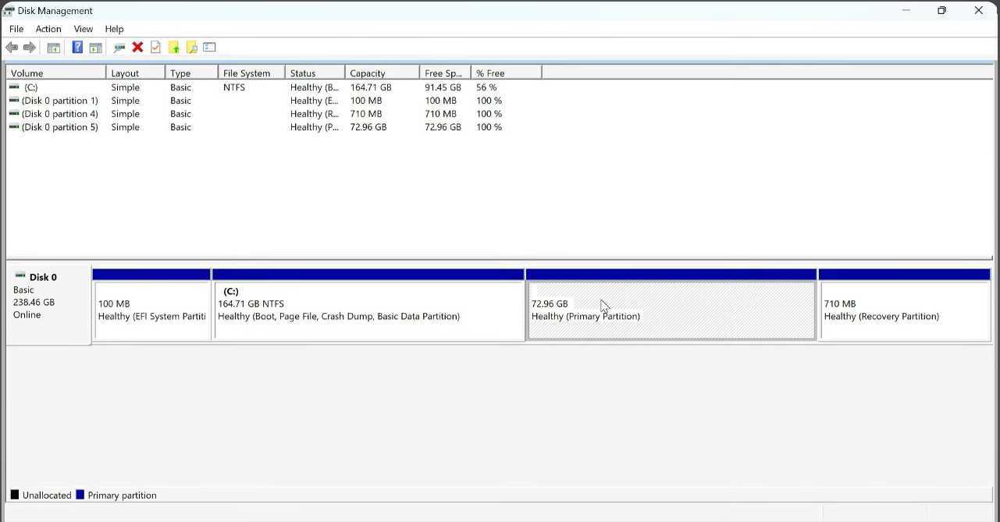
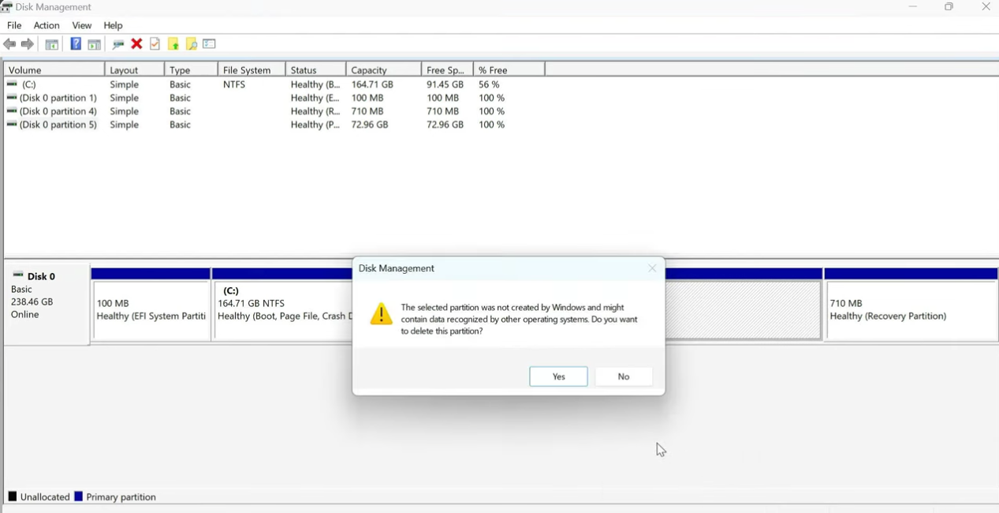
Den Speicherplatz wieder Windows zuweisen
Rechtsklicken Sie auf das Laufwerk C: und wählen Sie Volume erweitern → Weiter → Weiter → Fertig stellen.
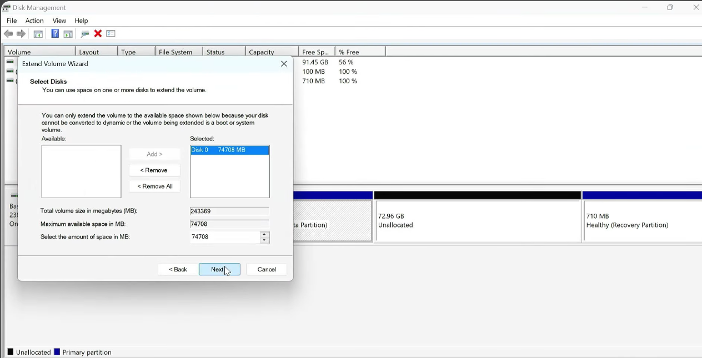
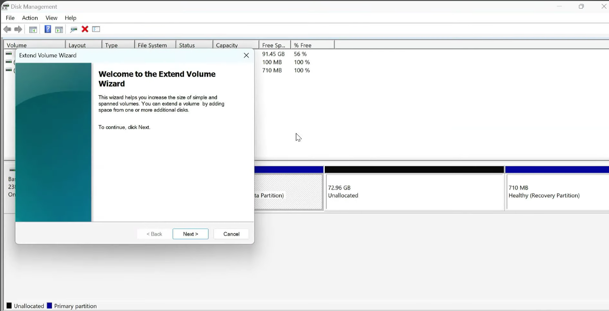
Der EFI-Partition einen Laufwerksbuchstaben zuweisen
Die EFI-Partition ist eine kleine, versteckte Partition, in der Bootloader-Dateien wie GRUB gespeichert sind. Windows versteckt sie standardmäßig. Öffnen Sie die Eingabeaufforderung als Administrator und führen Sie diese Befehle aus:
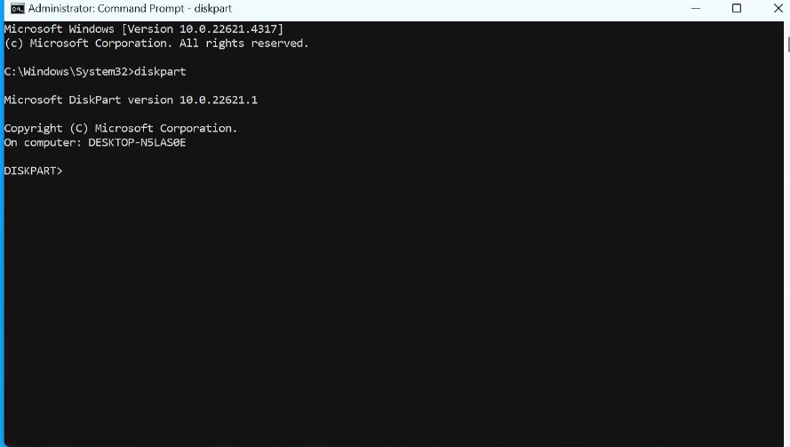
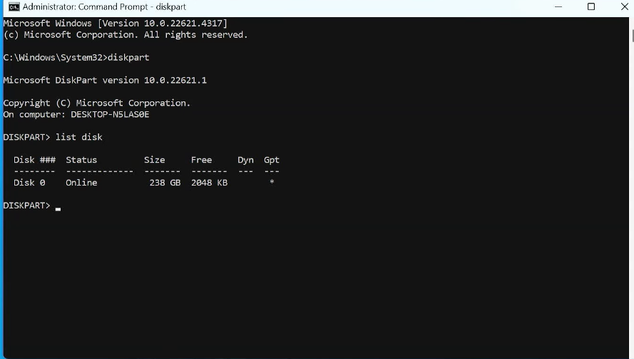
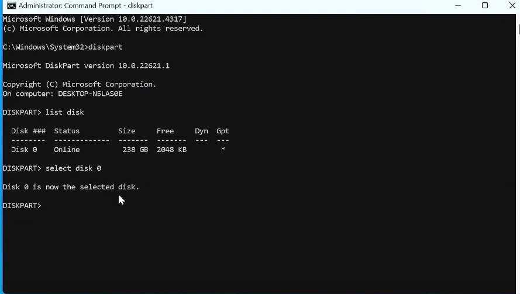
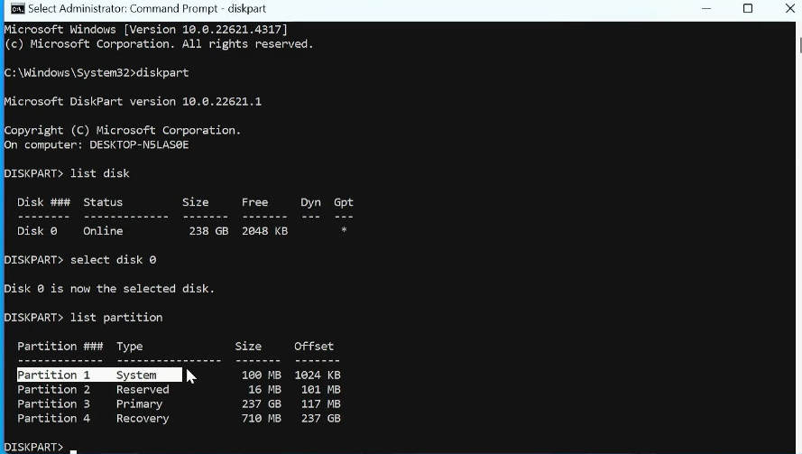
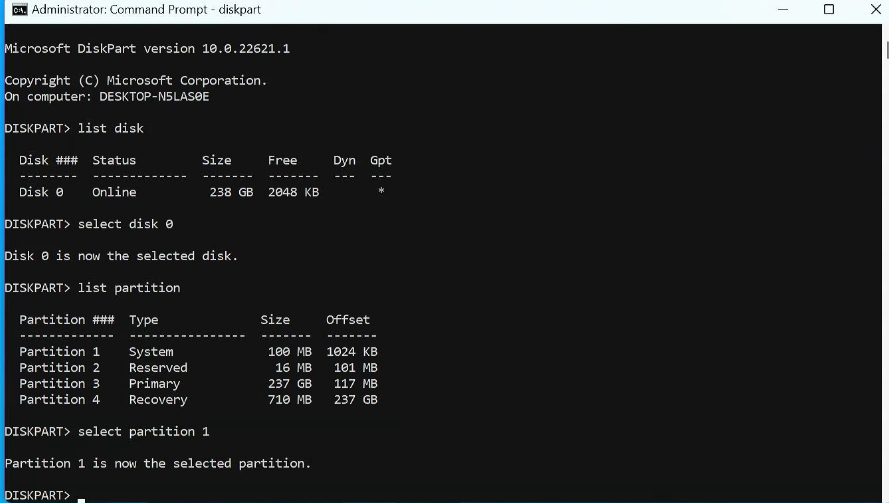
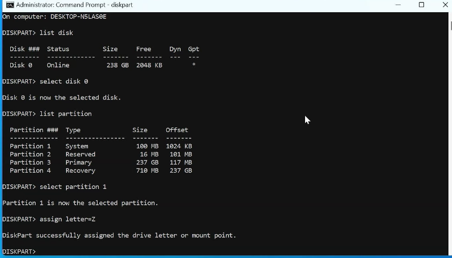
list disk, um sicherzustellen, dass Sie auf Datenträger 0 (Ihr Windows-Hauptlaufwerk) arbeiten.Die Ubuntu-Bootloader-Dateien aus der EFI-Partition löschen
Öffnen Sie die EFI-Partition und löschen Sie nur den Ubuntu-bezogenen Bootloader-Ordner.
- Drücken Sie
Strg + Umschalt + Esc, um den Task-Manager zu öffnen. - Klicken Sie auf Datei → Neuen Task ausführen.
- Geben Sie
explorer.exeein und aktivieren Sie „Diesen Task mit Administratorrechten erstellen“. Klicken Sie auf OK. - Öffnen Sie im Datei-Explorer Dieser PC → Z: → EFI.
- Suchen Sie den Ordner
ubuntuund löschen Sie ihn.
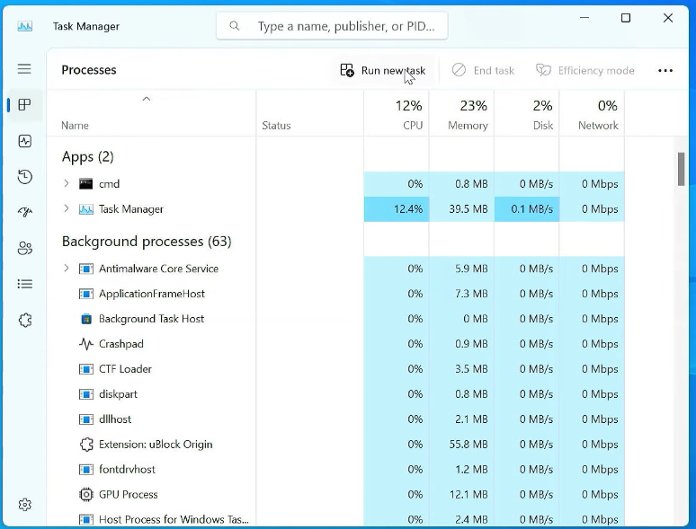
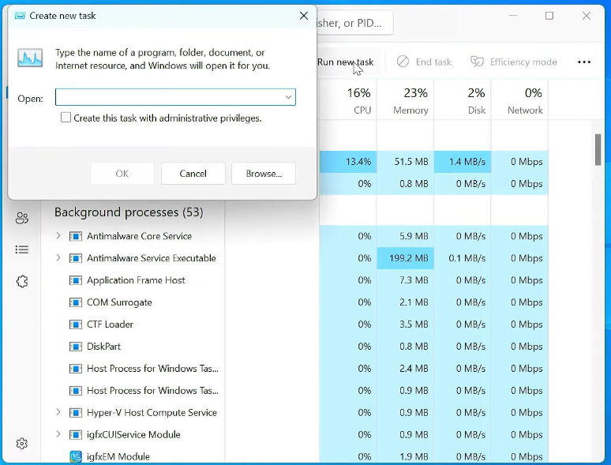
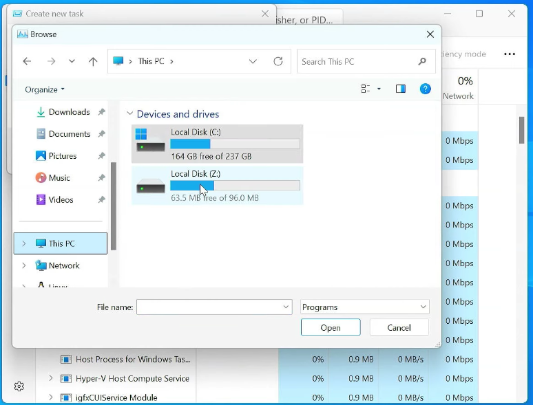
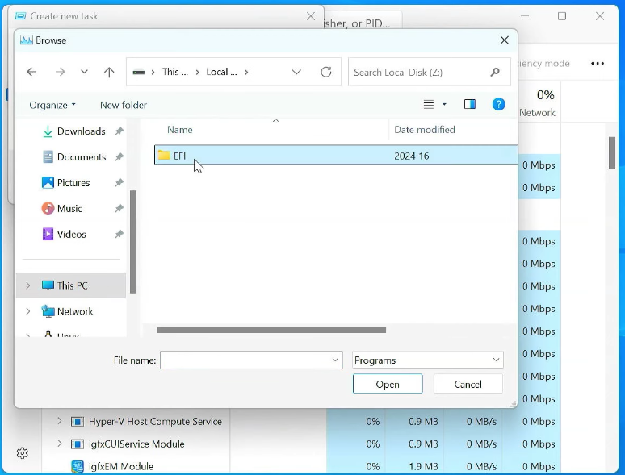
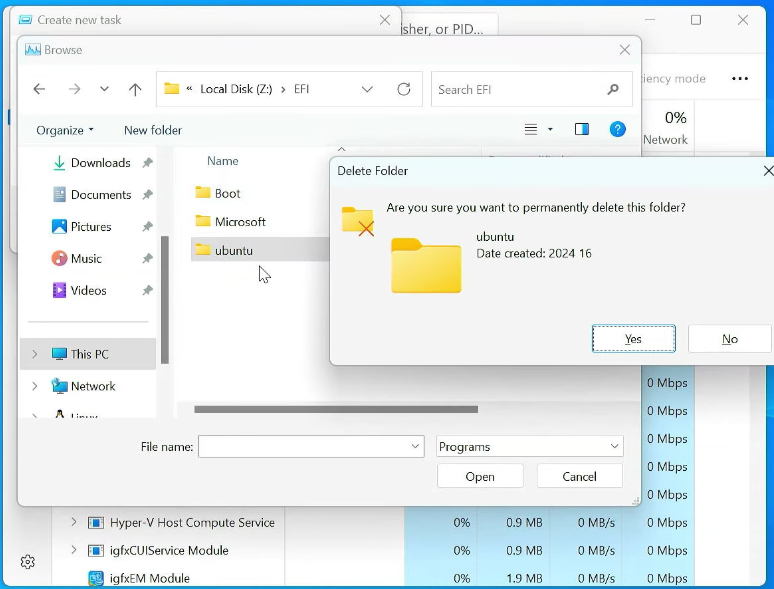
ubuntu. Löschen Sie nicht den Ordner Microsoft, da Windows sonst nicht mehr startet.Den temporären Laufwerksbuchstaben entfernen
Kehren Sie zur Eingabeaufforderung zurück und entfernen Sie den Buchstaben, den Sie zugewiesen haben:
Häufig gestellte Fragen
Ist es sicher, GRUB unter Windows 11 zu löschen?
Ja, solange Linux bereits entfernt wurde und Sie nur den Ordner ubuntu löschen. Der Ordner Microsoft muss erhalten bleiben.
Warum wird GRUB nach dem Löschen von Ubuntu noch angezeigt?
Die Ubuntu-Partition und die GRUB-Dateien in der versteckten EFI-Partition sind getrennt. Deshalb muss der Ubuntu-Ordner in der EFI-Partition zusätzlich gelöscht werden.
Kann ich GRUB entfernen, ohne Linux zu löschen?
Technisch ist das möglich, aber nicht empfehlenswert. Ohne GRUB können Sie die Linux-Installation möglicherweise nicht mehr starten.
GRUB ist entfernt.
Ihr PC startet nun direkt in Windows 11. Der Speicherplatz ist zurückgewonnen und es bleiben keine Linux-Bootloader-Reste zurück.